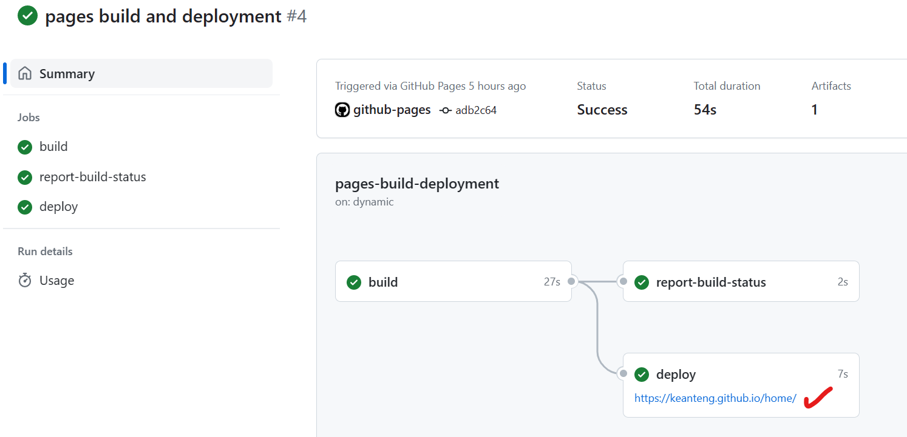

Images from Unsplash
This article aims to provide a comprehensive overview of how this site is set up and run.
Pre-requisite
There are a few things to prepare before your own site can be created, as follows:
- A GitHub account
- Installed Microsoft Visual Studio Code
- Installed Git
After you create a GitHub account and installing the necessary software, we are ready to begin!
Website Foundations Setup
The site that we are going to create will be based on Hugo, an open-source site generators where it provides a framework for us to deploy a site with speed and ease.
To build our website, we will need to install Hugo into our local machine. The installation process will be done on Windows Terminal with the support of Go language. Of course, you can also use other language such as chocolatey, scoop and winget.
After installing go, here’s how to install Hugo on terminal:
go install -tags extended github.com/gohugoio/hugo@latest
hugo version # check if you are using the latest version
With Hugo installed in our local system, we would like to now create the foundation or framework for our website. Here I encourage you to change your directory first, preferably to \Desktop so that you can access all your files easily:
cd C:\Users\Username\Desktop
hugo new site <your_site_name> -f yml
Now change your directory again and create a page on your website:
cd <your_site_name>
hugo new docs/page.md
Website Theme Setup
With the site foundation ready, we now add a theme or a specific design to our site for better functionality and appearance. You can check out different theme here, but in my case we will proceed with the PaperMode theme.
Here we will use git to install the website theme:
git init
git clone https://github.com/adityatelange/hugo-PaperMod themes/PaperMod --depth=1
git submodule add --depth=1 https://github.com/adityatelange/hugo-PaperMod.git themes/PaperMod
After that, navigate to GitHub to create an empty repository and head back to terminal where we need to link up our files with the repository created. Since we are using an empty repository, we need to create a first file, usually README.md to avoid causing any error:
echo "# Test" >> README.md
git add README.md
git commit -m "Initial commit"
git branch -M main
git remote add origin https://github.com/YOUR-GIT-NAME/REPOSITORY-NAME.git
git push -u origin main
If you want to see how your website look like, you can deploy your site locally using Hugo. This is a good practice to check for error and website update before deploy your site publicly. Simply click the link or type 127.0.0.1 on your web browser:
hugo server
Website Deployment Workflow
Just now your were shown to deploy the site locally, now to do it publicly - meaning on the web, you need the support from GitHub workflow.
Here we will need to create an additional directory and put in some codes into it:
mkdir -p .github/workflows
After creating this directory, create a file with name deploy.yml in the workflow folder. Then navigate these two files (your can use file explorer) and put in these codes:
config.yml- After copying, change the first line
baseurl:to the following format"https://YOUR-NAME-ON-GITHUB.github.io/REPOSITORY-NAME/"
- After copying, change the first line
copy the code from here (https://github.com/adityatelange/hugo-PaperMod/blob/exampleSite/config.yml)
deploy.yml
name: Publish to GH Pages
on:
push:
branches:
- main
pull_request:
jobs:
deploy:
runs-on: ubuntu-latest
steps:
- name: Checkout source
uses: actions/checkout@v3
with:
submodules: true
- name: Checkout destination
uses: actions/checkout@v3
if: github.ref == 'refs/heads/main'
with:
ref: gh-pages
path: built-site
- name: Setup Hugo
run: |
curl -L -o /tmp/hugo.tar.gz 'https://github.com/gohugoio/hugo/releases/download/v0.110.0/hugo_extended_0.110.0_linux-amd64.tar.gz'
tar -C ${RUNNER_TEMP} -zxvf /tmp/hugo.tar.gz hugo
- name: Build
run: ${RUNNER_TEMP}/hugo
- name: Deploy
if: github.ref == 'refs/heads/main'
run: |
cp -R public/* ${GITHUB_WORKSPACE}/built-site/
cd ${GITHUB_WORKSPACE}/built-site
git add .
git config user.name 'keanteng' # change to your username
git config user.email 'u2004763@siswa.um.edu.my' # change to your email
git commit -m 'Updated site'
git push
Before we link up our local files with the repository, you need to create a new branch on your repository called git-pages and you need to change the setting for GitHub actions.
Change the setting here
Final Step
For the last part of the website setup, we will link up our local files with the repository created so that we can view our site online:
git status
git add .
git commit -m "site update"
git push
Now, just head to GitHub actions and click on pages build and deployment, and click on your website link on the web!
Click on the link to view your site
Acknowledgements✨
I would like to thank Hugo and PaperMode for empowering me with the tool and foundations to build such a beautiful and impressive site. I want to thank dhij for the wonderful tutorial on YouTube for the site set-up, I failed on numerous attempt to set up the site by looking at some blogs on Medium until I look up his video. I am inspired to make this blog as comprehensive as possible so anyone that reads it can follow successfully.